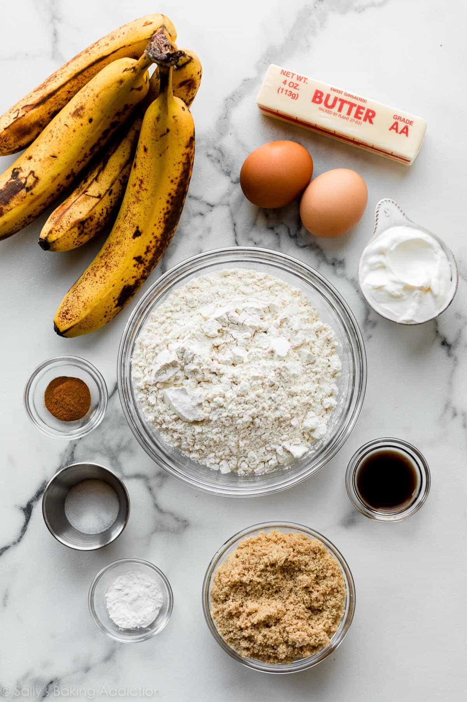
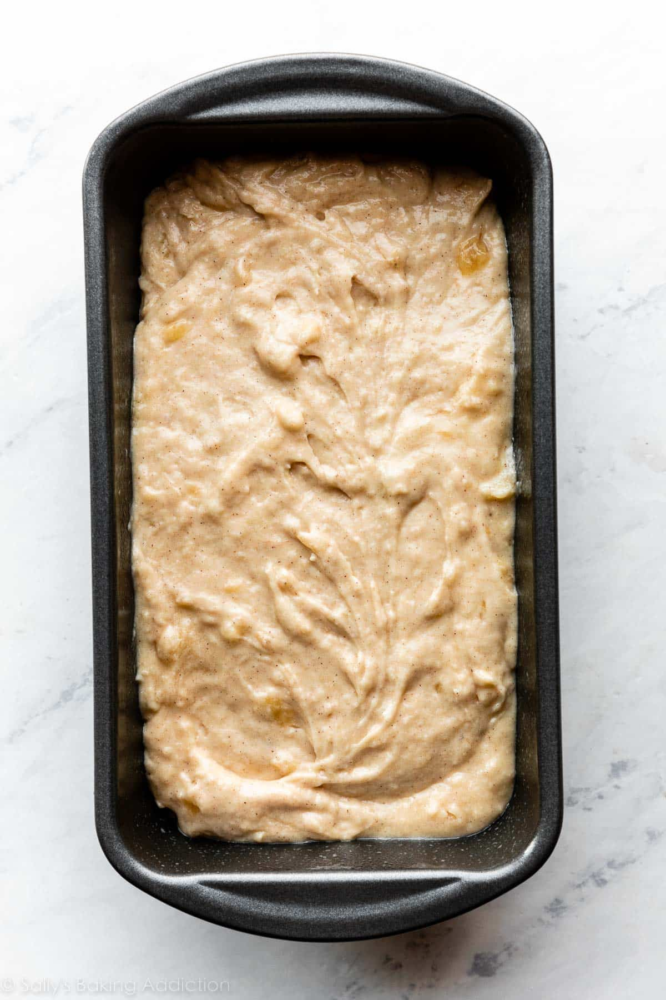
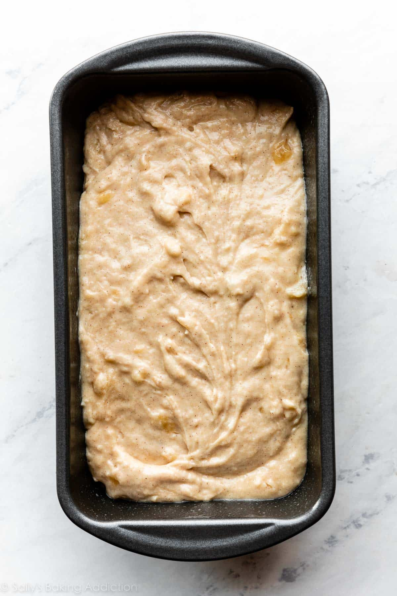
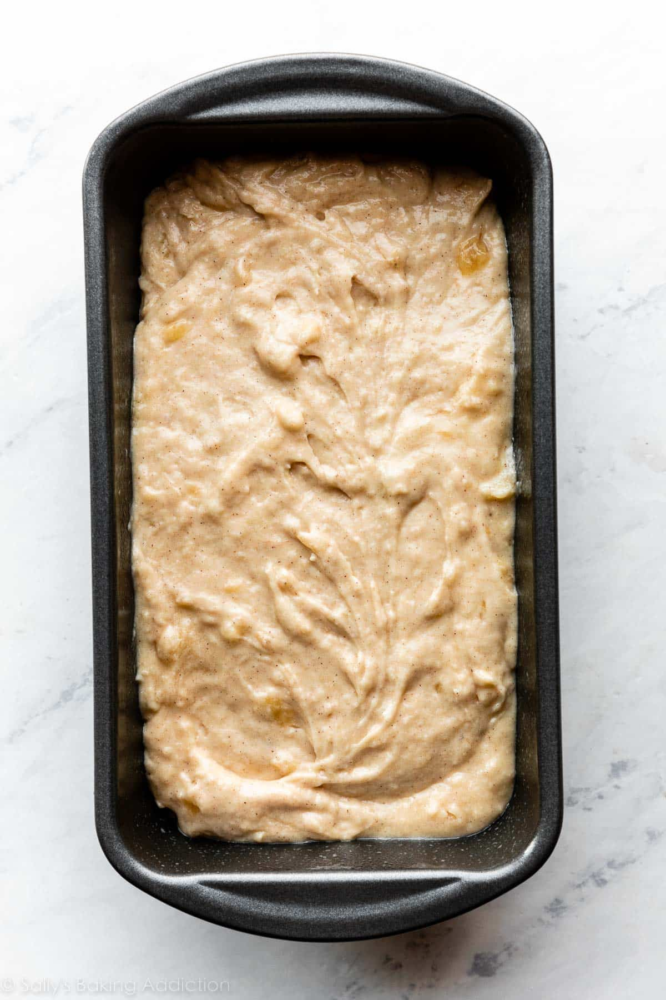

Description:
When you have overripe bananas laying around at home, the usual go-to thought is to make banana bread. Not only is it easy to make, but it is also makes for a delicious snack. Another plus is that this is something that you can easily share the love with others.
**Note on Dietary Restrictions: This recipe is not created in mind of a specific diet. Therefore, please review the ingredients carefully before starting to bake and consume this banana bread!
Total Time:
Prep Time: 10 minutes
Cooking Time: 65 minutes
Ingredients:
- 1/2 cup (8Tbsp;113g) unsalted butter, softened to room temperature
- 3/4 cup (150g) packed light or dark brown sugar
- 2 large eggs, at room temperature
- 1/3 cup (80g) plain yogurt or sour cream, at room temperature
- 2 cups (460g) mashed bananas (about 4 large ripe bananas)
- 1 teaspoon vanilla extract
- *Personal addition: Maple Syrup (as much as you want)*
Instructions:
- Preheat oven to 350°F (175°C). Grease a 9x5-inch loaf pan with nonstick spray.
- In a large mixing bowl, whisk the flour, baking soda, salt, and cinnamon together.
- In another bowl, use any type of mixer with a paddle or whisk (or even by hand is fine) to beat together the butter and brown sugar together until the texture is smooth and creamy. Then, add the eggs one at a time, beating well after each addition. Then, beat in the yogurt, mashed bananas, and vanilla extract until combined.
- Add wet ingredients to dry ingredients and stir until just combined. Do not overmix.
- Pour batter into the prepared loaf pan and bake for 60-65 minutes, or until a toothpick inserted into the center comes out clean.
- Remove from oven and let cool in the pan for an hour. Finally, remove the bread from the pan and cool directly on a wire rack until ready to serve.
Recipe Source: sallysbakingaddiction.com
Process Images:

 

